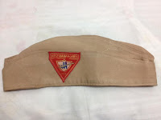
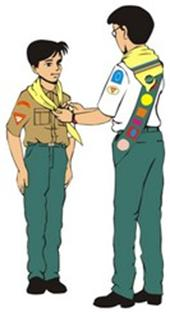

Historia
Quando as sociedades jovens começaram a se organizar, por volta da década de 1920, não havia
um
uniforme para essas sociedades, chamadas de Missionários Voluntários. Mas algumas Sociedades
padronizavam uma roupa social marrom e cáqui. Já eram desenvolvidas algumas especialidades
(chamadas de Honras Devocionais) e quem as ganhava podia guarda-las numa caixinha, pois não
havia faixa de especialidades.
Com o passar dos anos, os Missionários Voluntários das Sociedades de Jovens começaram a se
diferenciar, formando o clube de Desbravadores. Então, em 1944, surgiu o primeiro uniforme
de
gala, que era verde floresta mas não tinha nenhum emblema. No entanto, esse uniforme ficou
poucos anos, pois um juvenil de um clube acabou sendo morto numa excursão na mata por uma
pessoa
que o teria confundido com um terrorista.
Quando a Associação Geral oficializou o Clube de Desbravadores, em 1950, surgiu então o
uniforme
de gala com emblemas (como o triângulo, desenhado pelo pastor Jonh Hancock) e o lenço. O
lenço
foi uma herança dos escoteiros, pois alguns dos primeiros manuais e normas do clube eram
inspirados no escotismo. Haviam 4 cores de lenço, dependendo da Classe Progressiva do
desbravador (Amigo, Companheiro, Camarada e Guia).
O primeiro brasileiro a usar uniforme foi o Pr. Cláudio Belz, que esteve nos EUA, por volta
de
1960, onde conheceu o Clube, gostou da novidade, mandou fazer uniforme e o usava ao voltar
para
o Brasil enquanto tentava iniciar a organização de um Clube no Rio de Janeiro, na Igreja do
Méier. Este uso de uniforme não pastoral foi bem recebido, no início por alguns membros.

No início da década de 1980, o uniforme sofreu algumas alterações. A manga passou a ser curta
e
o tecido mais leve e de cor cáqui, tanto para calça, saia e camisa. A gravata deixou de ser
usada,
os sapatos e meias passaram a ser pretos para os homens
(meia branca para as meninas).

Um dos acessórios mais polêmicos do uniforme surgiu no final da década de 1980. O boné no estilo
beisebol, de cor cáqui, passou a fazer parte do uniforme substituindo o quepe. Recebeu muitas
críticas (e ainda recebe) por se tratar de um acessório esportivo utilizado com um uniforme
social. Apesar de muitos preferirem boinas ou mesmo o antigo quepe, a verdade é que o boné
continua como padrão em nossa Divisão, sendo regulamentado como de cor verde (desde 2005)
e opcional.
Por volta do ano 2000, os regionais e coordenadores passaram a usar um uniforme de camisa branca
e calça verde. Esse uniforme permaneceu exclusivo desses oficiais até 2005, quando passou a ser
usado por toda a diretoria. Os desbravadores deixaram de usar a calça (saia) cáqui e passaram a
usar da cor verde também.
O padrão do uniforme de gala é designado pela Divisão a qual o clube pertence. Há 13 Divisões no
mundo. Em cada uma delas o padrão é diferente. Há Divisões que são mais liberais e permitem
lenços e uniformes de cores variadas. Há ainda outras que permitem o uso do quepe.